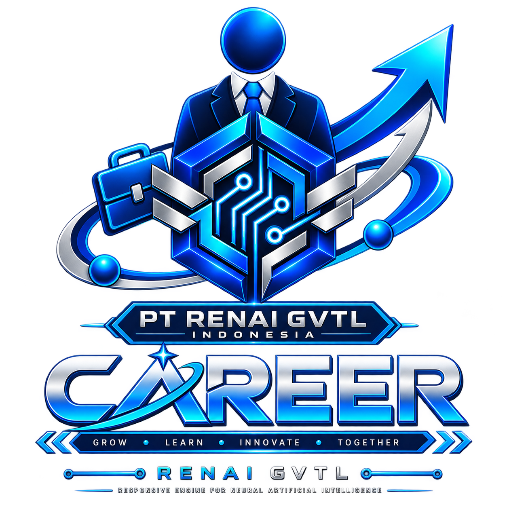

01
Research
Eksplorasi Artificial Intelligence, metadata, provenance, software, arsitektur sistem, dan teknologi digital.


CAREER • PT RENAI GVTL INDONESIA • AI TECHNOLOGYPT RENAI GVTL Indonesia sedang membangun fondasi perusahaan teknologi dan ekosistem Artificial Intelligence dari Majalengka, Jawa Barat, Indonesia. Pengembangan mencakup riset AI, software, infrastruktur teknologi, dan proyek seperti RENAI Router, Chat GVTL, serta RENAI Image.
PT RENAI GVTL Indonesia membangun fondasi teknologi secara bertahap dari Majalengka, Jawa Barat, Indonesia, dengan orientasi terhadap pengembangan teknologi AI dan infrastruktur digital yang dapat berkembang menuju skala yang lebih luas.
Eksplorasi Artificial Intelligence, metadata, provenance, software, arsitektur sistem, dan teknologi digital.
Membangun arsitektur, software, infrastruktur, pipeline, serta komponen teknologi yang menjadi bagian dari ekosistem RENAI GVTL.
Mengubah hasil riset dan eksperimen menjadi konsep teknologi yang dapat divalidasi dan dikembangkan lebih lanjut.
Pengembangan ekosistem RENAI GVTL membutuhkan berbagai disiplin teknologi dan penelitian.
Riset, eksperimen, model AI, machine learning, dan pengembangan teknologi kecerdasan buatan.
Pengembangan aplikasi, platform, API, backend, frontend, sistem, dan perangkat lunak pendukung.
Eksplorasi infrastruktur komputasi, pipeline, routing, storage, metadata, dan sistem pendukung AI.
Penelitian konsep, eksperimen, prototyping, dokumentasi, pengujian, dan validasi teknologi.
Penelitian mengenai metadata, provenance, integrity, dan interoperabilitas aset digital.
Pengembangan pengalaman pengguna, produk digital, interface, dan komunikasi teknologi.
Karier di PT RENAI GVTL Indonesia terhubung dengan perjalanan penelitian dan pembangunan ekosistem teknologi perusahaan.
Ekosistem teknologi Artificial Intelligence yang menjadi bagian dari arah pengembangan PT RENAI GVTL Indonesia.
Jelajahi RENAI GVTL →
Rancangan infrastructure metadata middleware yang mengeksplorasi metadata preservation, provenance, validation, dan integrity.
Lihat RENAI Router →
Platform AI yang sedang dikembangkan sebagai salah satu proyek teknologi dalam ekosistem RENAI GVTL.
Jelajahi Chat GVTL →
Arah eksplorasi teknologi visual dan pemrosesan aset digital dalam ekosistem RENAI.
Lihat RENAI Image →PT RENAI GVTL Indonesia masih berada dalam tahap pembangunan fondasi. Informasi mengenai posisi, kolaborasi, maupun kesempatan bergabung akan dipublikasikan melalui kanal resmi perusahaan ketika tersedia.
Informasi berikut membantu menjelaskan identitas, teknologi, lokasi, dan arah pengembangan PT RENAI GVTL Indonesia.
PT RENAI GVTL Indonesia merupakan perusahaan teknologi asal Majalengka, Jawa Barat, Indonesia, yang berfokus pada Artificial Intelligence, riset teknologi, pengembangan perangkat lunak, infrastruktur AI, dan pembangunan ekosistem RENAI GVTL.
RENAI GVTL merupakan identitas ekosistem teknologi yang dikembangkan oleh PT RENAI GVTL Indonesia. RENAI digunakan sebagai akronim Responsive Engine for Neural Artificial Intelligence , sedangkan GVTL merupakan singkatan dari Global Virtual Technology Lab .
Nama RenAI dibentuk dari Ren, yang merujuk pada Reno, dan AI, yang merujuk pada Artificial Intelligence. Dalam identitas teknologinya, RENAI digunakan sebagai akronim Responsive Engine for Neural Artificial Intelligence.
PT RENAI GVTL Indonesia dikembangkan dari Majalengka, Jawa Barat, Indonesia, dengan orientasi terhadap pembangunan teknologi yang dapat berkembang menuju ekosistem global.
RENAI Router merupakan rancangan infrastructure metadata middleware yang sedang dikembangkan untuk mengeksplorasi preservasi metadata, provenance, validasi, dan integritas aset digital dalam pipeline AI.
Belum. RENAI Router masih berada dalam tahap Research & Development. Arsitektur, spesifikasi, format internal, dan komponen teknologinya masih dapat berubah selama proses penelitian dan pengembangan.
Chat GVTL merupakan salah satu proyek awal pengembangan platform Artificial Intelligence dalam ekosistem RENAI GVTL.
RENAI Image merupakan arah eksplorasi teknologi visual dalam ekosistem RENAI GVTL yang masih berada dalam tahap penelitian dan pengembangan.
Informasi posisi dan kesempatan kerja akan mengikuti perkembangan organisasi dan proyek. Informasi resmi mengenai karier dan kolaborasi akan disampaikan melalui kanal resmi PT RENAI GVTL Indonesia.
PT RENAI GVTL Indonesia membangun perjalanan teknologinya dari Majalengka, Jawa Barat, Indonesia. Nama RenAI menggabungkan identitas Ren dan AI, sementara identitas teknologinya direpresentasikan melalui Responsive Engine for Neural Artificial Intelligence . RENAI GVTL menjadi bagian dari visi perusahaan untuk membangun ekosistem teknologi yang mencakup Artificial Intelligence, software, infrastructure, metadata, provenance, dan teknologi digital lainnya.
Perjalanan tersebut merupakan bagian dari The Foundation Era, yaitu fase ketika perusahaan memprioritaskan pembangunan fondasi, riset, eksperimen, arsitektur, dokumentasi, dan validasi teknologi sebelum memasuki tahap pengembangan yang lebih luas.